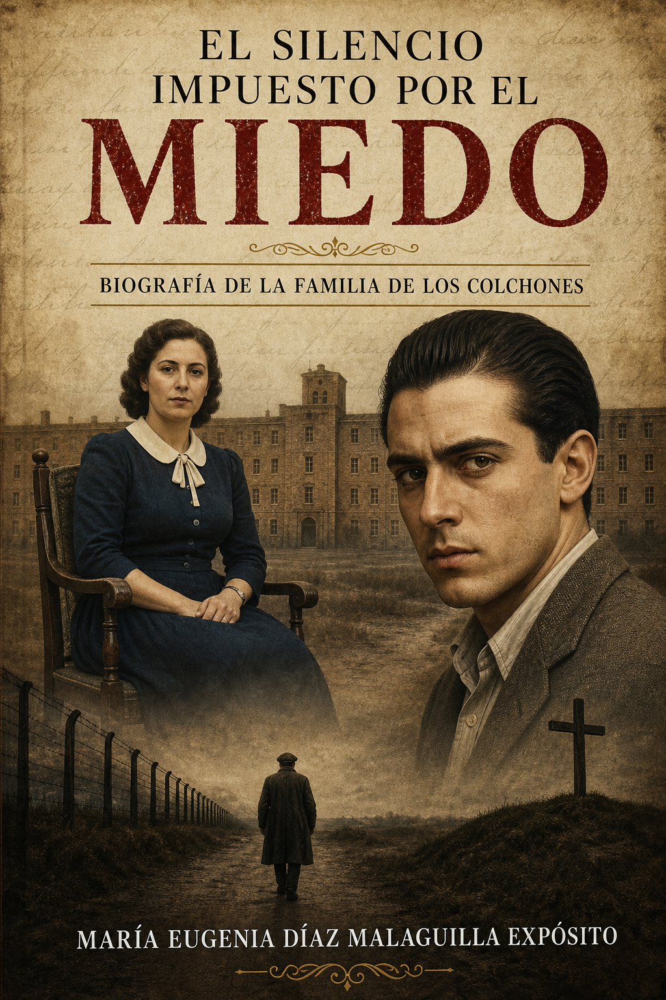
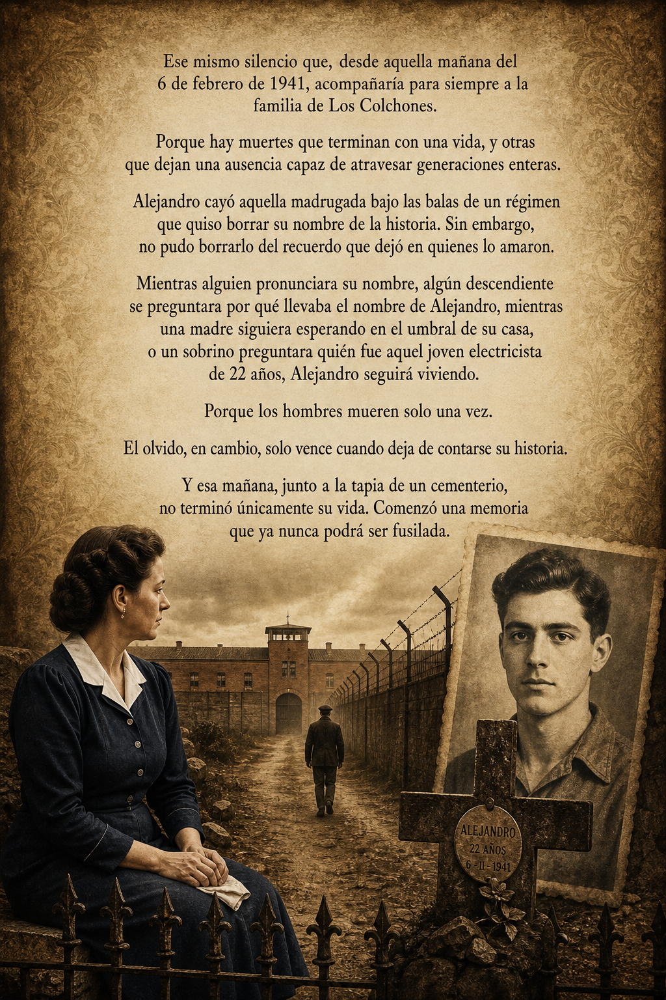

Recibí ayer los libros. Ya llevo la mitad leído, y me está encantando. Qué bien escribes, jodia! Tienes que seguir.

Biografía de la familia de Los Colchones
El silencio impuesto por el miedo
Desplázate
El libro
Una memoria que no puede ser fusilada

Ese mismo silencio que, desde aquella mañana del 6 de febrero de 1941, acompañaría para siempre a la familia de Los Colchones.
Porque hay muertes que terminan con una vida, y otras que dejan una ausencia capaz de atravesar generaciones enteras.
Alejandro cayó aquella madrugada bajo las balas de un régimen que quiso borrar su nombre de la historia. Sin embargo, no pudo borrarlo del recuerdo que dejó en quienes lo amaron.
Mientras alguien pronunciara su nombre, algún descendiente se preguntara por qué llevaba el nombre de Alejandro, mientras una madre siguiera esperando en el umbral de su casa, o un sobrino preguntara quién fue aquel joven electricista de 22 años, Alejandro seguirá viviendo.
Porque los hombres mueren solo una vez. El olvido, en cambio, solo vence cuando deja de contarse su historia.
Y esa mañana, junto a la tapia de un cementerio, no terminó únicamente su vida. Comenzó una memoria que ya nunca podrá ser fusilada.
Dedicatoria
A quienes no deben ser olvidados
A mi familia, «La familia de Los Colchones»
A los que murieron sin saber la verdad.
A los que marcharon pidiendo justicia.
A los que nunca dejaron de buscar.
A los que la vida arrebató sus recuerdos.
A las mujeres ejemplo de superación, lucha y resiliencia.
A las que afrontaron la vida pese a los obstáculos que les ponían.
A quienes tuvieron miedo.
A quienes señalaron de por vida.
Sirvan estas letras, para impedir que sus nombres y su lucha se borren de la historia.
Comprar
Próximamente venta directa
Muy pronto podrás adquirir El silencio impuesto por el miedo directamente desde esta web. Una historia de memoria, investigación y dignidad que merece ser contada.
Precio
19,95 €
La venta online estará disponible en breve. Mientras tanto, consulta los puntos de venta.
Ver puntos de venta
Dónde encontrarlo
Puntos de venta
Estos son los lugares donde ya puedes adquirir el libro. Pronto se irán sumando más.
-
Droguería Hermanos Almarcha
La Solana, Ciudad Real
Calle Carrera, 53
-
Pedido por correo electrónico
Escríbenos para solicitar tu ejemplar
info@elsilencioimpuestoporelmiedo.es
Opiniones
Lo que dicen los lectores
Reseñas de lectores reales que lo han terminado.
Me ha gustado mucho el libro, que bien explicado todo. Una historia terrible en un tiempo que era lo normal. Y qué duro normalizar tanta injusticia y tanto dolor como causaron aquellos actos de venganza. En nuestro caso fue una denuncia falsa también. Lo dicho, enhorabuena por el libro, muy bien redactado y ahí queda para los restos.
Me ha gustado especialmente la conversación de Alejandro con su hermana en el zulo, el juicio y sobre todo el final cuando van a buscarlo para el fusilamiento.
Me ha dicho mi padre que un 10 de libro. Lee muchísimo, y me ha dicho que al final se le ha caído la lagrimilla y todo. Que súper bien. Enhorabuena.
Bueno pues ayer, terminé el libro. Una historia triste pero que hay que contarla para que no se pierda la memoria, novela con una narrativa muy fácil de leer para el lector, con algunos toques lorquianos. No sé si mi criterio sea objetivo pero me ha encantado, me ha dado mucha pena terminar el libro.
Me está gustando mucho!! Menudo trabajo de investigación has realizado!!! Debería leerlo todo el «pueblo» para que sepan lo que lucharon por el Legado.
Ayer me terminé el libro. Me ha gustado la historia, aunque sea muy dura. Me quedé con ganas de saber qué ocurrió con su hermano José, con el resto de la familia... No sé si haya segunda parte... Enhorabuena por la investigación y el libro, seguro que ha sido un proyecto largo y costoso.
Me terminé el libro anoche. Mientras lo he leído iba comentándolo con mi padre, sobre las personas y los hechos. Muy gratificante y constructivo. Me ha parecido maravilloso y muy triste. Espero y deseo que llegue a muchas personas.